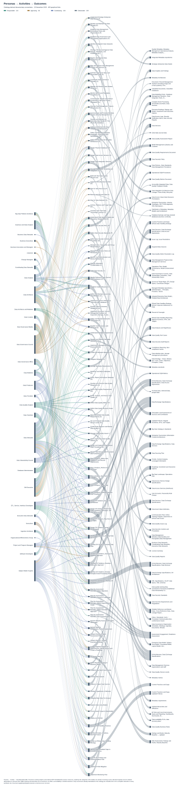

Which DAMA personas occur in recorded activity responsibilities, and which intended deliverables are connected to those practices?
Persona → Activity → Intended deliverable. Persona-to-activity weight counts distinct RDF ActivityRoleOccurrence resources, retaining role categories in the details. An activity’s incoming count is allocated equally across its distinct deliverables to conserve flow. Width measures documentary role occurrences, not effort, accountability or verified outcomes. Only occurrences already materialised in the ontology are included; this is not a complete extraction of every workbook role. Area-level supplier/participant/consumer occurrences are not used.

Interactive diagram · Offline interaction · PNG · SPARQL · Extracted rows